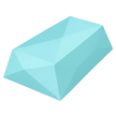
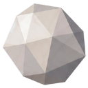

Crystal Axe
Tool · Tier 6
| Property | Value |
|---|---|
| Tool for | 🪓 Lumbering (power 0.25) |
| Tempered with |  Crystal Bar40 40 40 40  Uncut Diamond (to +5) |
| Value | 11,200 coins |
| Sells for | 1400 coins each |
| High Alchemy | 1,959 coins |
| Market price | 2,000 coins (a guide for trading; shops and High Alchemy pay far less) |
| Stacks | No |
Made by
| Recipe | Level | Needs |
|---|---|---|
| ⚒️ Smith Crystal Axe | 🔨 Forging 76 | Crystal Bar ×2 |